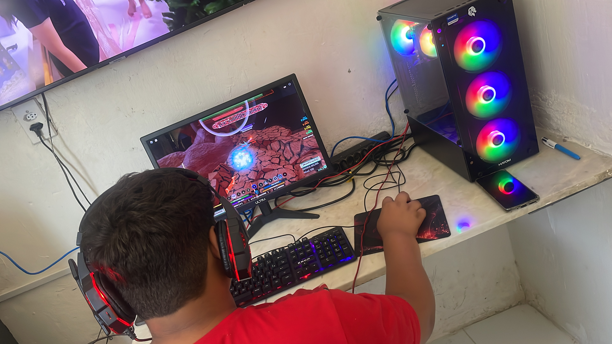

Welcome to My Website
Hello, World!

Your browser does not support the audio element.
Click to see more information
This is additional information that can be toggled.
50%
20%
### Clássico de EDI ROCK e SEU JORGE ###
Agora, se um leitor de tela ou outro agente de usuário qualquer quiser oferecer a facilidade de ir direto para (ou pular) existe uma marcação semântica na página permitindo implementar a funcionalidade. Isto não é vantajoso somente para a acessibilidade. Por exemplo: um navegador poderá disponibilizar uma função para impressão que possibilite ao usuário imprimir somente os conteúdos dos elementos deixando fora da impressão blocos e outros que não interessam.
Os benefícios trazidos pelos elementos estruturais da HTML5 ainda não estão explorados em suas plenas potencialidades. Contudo, tecnologias assistivas já podem tirar proveito de um mecanismo similar, denominada WAI-ARIA, destinado a identificar estruturas importantes em uma página. ARIA não faz parte da HTML5; é uma especificação desenvolvida peloW3C e neste artigo nós não iremos nos aprofundar nas suas funcionalidades (ver um matéria em inglês escrita por Gez Lemon denominda Introduction to WAI ARIA), mas o conceito central da WAI-ARIA é o chamado Document Landmark Roles, que em tradução livre significa: função de um bloco de marcação no documento - conceito este que prevê uma marcação específica para tais blocos. Para cumprir suas finalidades ARIA usa atributos e não elementos uma vez que foi projetada para ser usada com qualquer linguagem de marcação e não apenas com a HTML — pode ser usada, por exemplo, com marcação SVG ou Adobe MXML.